Welcome to Module 2.
In this module, you’ll learn:
There’s not a client on earth who doesn’t need email copywriting. Even if a client is already doing email marketing, they can always use more emails … and more copywriters who are great at writing them.
Sadly, many freelance copywriters are missing the boat on this one.
They don’t feel confident about their email copywriting skills, and may even be confused about what makes email copy great in the first place.
I get it -- email copywriting can be confusing.
An email selling iPhone skins is going to sound very different from one promoting a new blog post from an industry thought leader…and so on.
But here’s the great news: Though all of these emails seem different on the surface, the best copywriters are able to systematically turn out great email copy, each and every time.
In this module, I’ll pull back the veil and show you the specific techniques I’ve been using to do it for years.
Let’s get this out of the way right now: The era of the exciting AOL "You’ve got mail!" message came to an end DECADES ago.
These days, there’s not a living soul that doesn’t consider it a dull chore to slog through an inbox of emails.
Email isn’t like a landing page or other types of copywriting. It’s invasive.
Readers don’t seek it out, it just appears in their inbox the way an unwelcome houseguest shows up unannounced at your doorstep.
If your email copy is pushy, boring, irrelevant, generic, or fluffy, it’s going to end up in the trash.
On the other hand, we’ve all been on the receiving end of emails we can’t wait to open.
Instead of sucking up our energy and draining our attention, they offer us value. Sometimes they even entertain us, at least for a moment or two.
I’m not talking about the type of questionable "value" people get from freebies, giveaways, or discounts.
Those are easy to offer -- anyone can type "Free coaching" or "90% off" into a subject line and press Send .
But have you ever noticed how difficult it is to actually get you interested in an offer like that? Why else would we all have so many unopened emails like this piled up in our "promotions" folders all the time?
Instead, I’ll show you how to craft emails that have REAL VALUE, and get results like these:
Achieving this takes effort, but it’s not as daunting or out of reach as you might think. If you follow the guidelines in this module, you’ll be able to write emails your clients love, with complete confidence.
These are the wrong questions.
Can you guess why? Think about it for a moment before moving on.
The answer is that they’re all about YOU. They’re not focused on the most important person…the person you’re writing to.
Things instantly become clearer when you focus on the reader instead. Help them out!
A better approach is to ask: "What does the reader need to accomplish, and how can I help them do it?"
You can use this attitude as a compass to guide you through every piece of email copy you write. It works because it’s all about making the reader’s life better. This automatically makes you a welcome guest in their inbox.
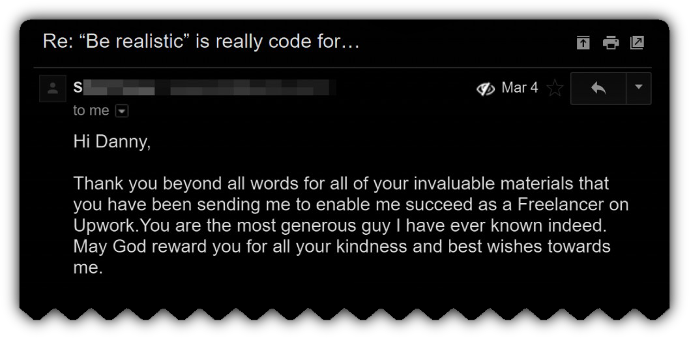
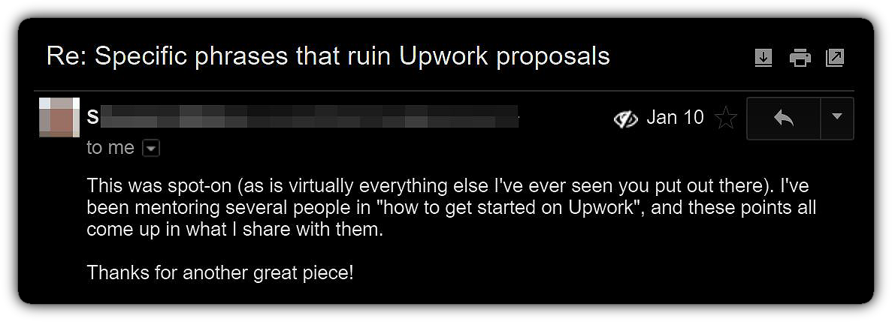
Let’s go through a real life example so you can see exactly how this unfolds when you’re working with clients.
We’ll start with a thought experiment: Imagine I asked you to write an email selling labor law posters to small businesses who are legally required to purchase updated posters every year, like this one:
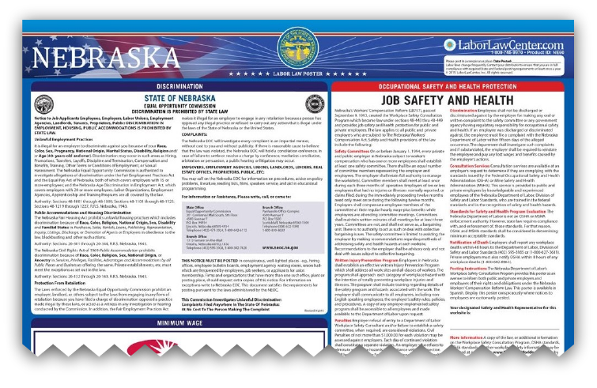
If you had no other information, you might think:
NO, NO, NO.
All you have to do is a simple role reversal. Ask yourself, what does the person reading the email NEED? What’s the BEST way to help them get it?
Switching over to this mentality may take some practice. But once you get used to it, you’ll be able to answer all of the above questions with shocking speed and accuracy .
Check out what I wrote for one of my clients in the exact situation I’ve described. As you read through it, see if you can figure out WHY I made the decisions I made (we’ll do a thorough analysis afterward, but in the meantime, no peeking)…
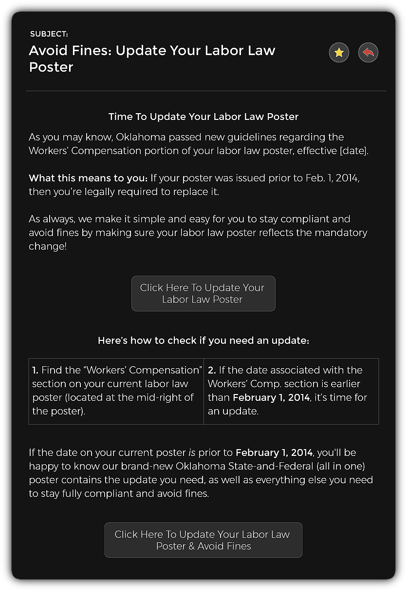
Now this is a very simple email, and it didn’t take me long to write it. But everything in it is carefully designed to cater to the specific person receiving the email: A small business owner who may need a new labor law poster.
Let’s do a complete analysis so you can see my thought process going in:
This is very counterintuitive, but it works. I’m first and foremost helping the business owner stay compliant with the law and avoid fines.
It’s not that my goal isn’t to sell. It is! But giving value is an equal priority. I’m a helpful advisor as much as I am a copywriter and salesperson.
No one really cares about labor law posters. Yes, it’s something that’s important to the reader’s business, but as far as they’re concerned it’s a TINY detail of their overall operation.
If you were a small business owner, would you have the time or energy to concern yourself with the finer details of different labor law poster packages, compliance laws, or whether or not you could save $5 by price shopping on Amazon? Of course not! You’re busy running your business.
You’d just want to know WHEN your current poster expires, and HOW to get a new one as quickly and easily as possible.
Notice how I immediately focus in on what’s important to them, making everything extremely clear and fluid so they barely even need to think. All the information they need is right here in this email.
I even taught them how to check if they need new labor law posters in 30 seconds , and added 2 call to action buttons to make their lives easier and save them time.
And I made sure to mention that the all-in-one poster we were selling was EVERYTHING they needed to stay compliant and avoid fines. This is very important because it prevents them from procrastinating -- they know they can just click, and be done with it.
This email improved my client’s conversions by more than 300% over the previous version they were using.
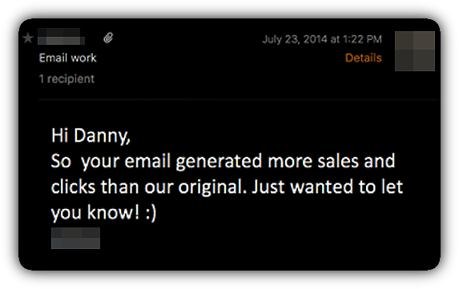 Will this exact same strategy work for every email you write? Of course not. As we discussed earlier, all emails are different.
And, as you’ll recall from Module 1, there’s no one "correct" way to write any piece of copy. I could have written the above email in any number of different ways. But the process of getting into the reader’s head and figuring out how to get them to take action is non-negotiable.
That’s why it’s always critical to do a role reversal and ask yourself -- what does this person need, and how can I help them get it? When you do that, your copy will naturally move in the right direction.
Remember, you need to adjust your strategy to fit the particular situation of each email you write. Sometimes, the differences between these situations can be subtle.
Let’s look at another email I wrote, also for small business owners -- except this time, the circumstances were slightly different, calling for radically different email copy.
In this case, the business owner signed up to receive a report called "7 Hiring Mistakes Most Bosses Make–and How to Avoid Them".
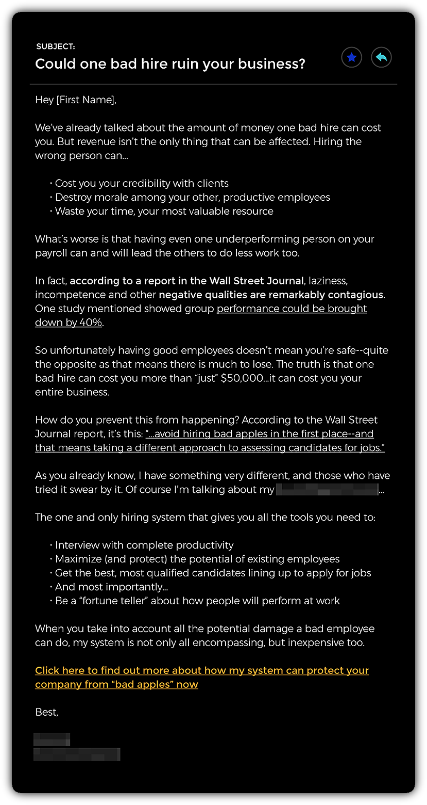
Since this email also went out to small business owners, you may be wondering why it’s so much longer than the previous one. Great question!
There are a few reasons why I chose to write it this way:
This is why it’s so important to cultivate your Detective Mindset and focus on accomplishing your email copywriting goals in a systematic way, rather than using a rigid set of rules.
Think of the end result you’re looking for, gather every clue you can find, and work backwards to help the reader take the action that will help them.
Whenever possible, you want to delay your sales pitch to readers for at least the first couple of emails.
Think of a rock concert or stand up comedy show. Whether it’s Metallica playing at Madison Square Garden, or Louis CK at The Beacon Theater, they all have one thing in common: They never go right up on stage. They always warm the audience up with an opening act before the main attraction.
Email copywriting works the same way. You’ll usually do better by warming readers up first. The more expensive the product (or service), the more important this strategy becomes.
That’s why marketing emails are sometimes referred to as lead nurturing, follow up, or autoresponder emails.
Regardless of what you (or the client) call it, it simply means that you send valuable information with no strings attached -- at least for the first 2-3 emails.
This helps you gain trust, build goodwill, and makes it more likely readers will open your emails. If you do it right, they may even anxiously look forward to hearing from you when you’re finally ready to sell them something.
Check out this lead nurturing email I wrote for one of my clients, a car dealer, to send to customers who’d requested a price quote from the dealership’s website:
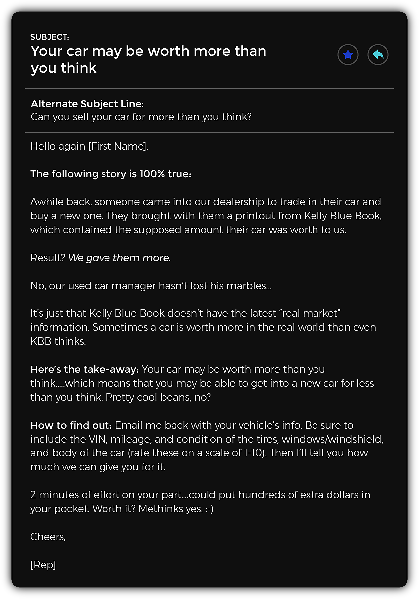
Notice how this email teaches the reader something that’s relevant, useful, and surprising -- with zero selling.
Contrast that with the typical pushy email you’d expect to receive from a car dealer, like this one:
…and you can see why it stands out, gets attention, and builds trust.
Once you do this, it becomes much easier to transition into selling later on.
Check out this snippet from my well known "Top 5 Upwork Hacks" email series, where I transition from a valuable tip, to selling (in email #3):
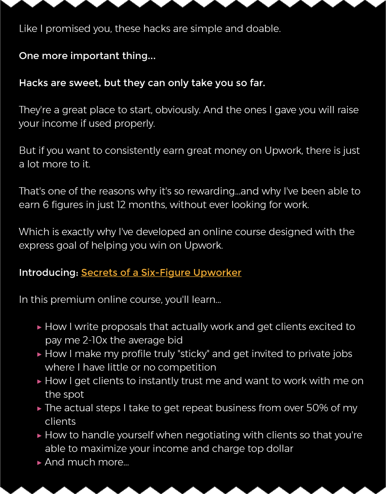
In fact, every email in the original series contained valuable information -- even the sales emails.
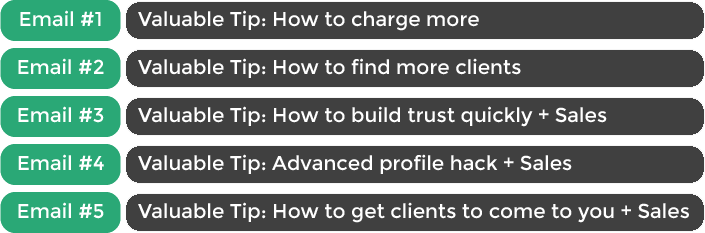
Notice how simple it was -- yet it was also incredibly effective. Far from distracting readers from the sale, teaching something surprising and helpful makes sales emails even more powerful.
Naturally, this is also the default approach I use when writing email sequences for clients. They love it, because it offers their readers tons of value, and -- when done right -- leads to even more conversions.
One of the hallmarks of great freelance copywriters is that they’re always able to come up with ideas for fresh email copy -- seemingly on demand.
Many copywriters struggle with this, but there’s no need to make it overly complicated.
Watch the video below to see how I come up with great ideas for email copy -- in any situation.
To show you how valuable clients can be in helping you come up with ideas, here’s an example of a very effective email one of my clients sent out to his prospects (camp owners who’ve expressed interest in updating their websites):
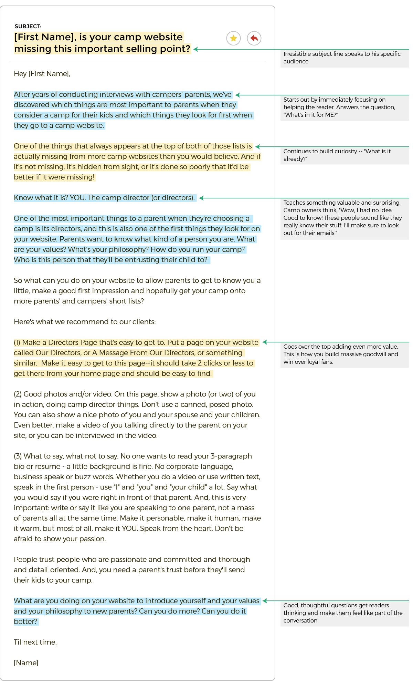
Remember, clients are full of great insights like these, but it’s up to you to ask the right questions in order to uncover it.
Let me ask you an honest question: Do the words "new blog post" get you visibly excited?
I didn’t think so.
Yet one of my most popular emails of all time was an announcement for a new blog post I’d written. It got an open and click rate that destroyed industry averages.
My secret? I didn’t start off talking about the blog post. Instead, I hooked readers with a story:
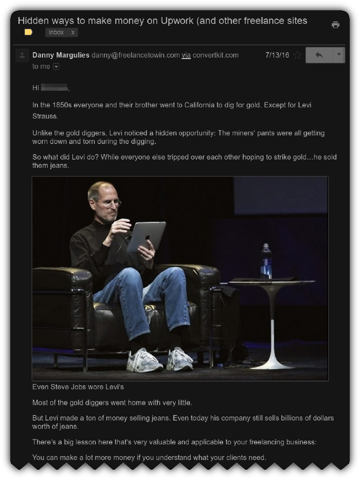
I use stories every chance I get, whether I’m selling or teaching -- and whether it’s an FTW email, or something I’m writing for a client.
People love stories because they’re one of the oldest forms of human communication and connection.
We’ve been telling stories for tens of thousands of years. It’s literally in our DNA, which is why even simple stories have the potential to captivate us.
Used properly, a good story can act like a trojan horse, delivering your client’s message without feeling like a sleazy marketing email.
A few years ago, I had no captivating stories to tell. At least, that’s what I told myself at the time.
Today, I have a file that contains DOZENS upon dozens of interesting writing prompts at any given time.
What changed?
Did I suddenly become a VIP or socialite who rubs shoulders with celebrities and elite business people and politicians? Hmm, let me think ab-- no.
The only thing that changed is psychological. Once I realized that even the simplest stories make for amazing emails, I’m constantly on the lookout for even the smallest nuggets that can turn an ordinary email from okay… to GREAT.
For the purposes of writing great email copy, a story can be ANYTHING surprising (preferably with some educational or practical value). Even a small factoid can work wonders.
You don’t even need to come up with it on your own! Some of the best performing emails I’ve written use stories I found online, in books, or even in movies.
For example, this story appeared in my Facebook news feed one morning, and I wrote it down knowing I’d eventually use it in an email:
Practically the entire email is comprised of that one story, and I didn’t come up with so much as one single detail on my own.
Great stories are all around you. You just need to switch from passive consumer to active listener.
Whenever I come across (or think of) anything surprising or interesting, I immediately write a note about it into a file called "writing prompts".
Here are some examples of 100% non-original "stories" that are sitting in my Writing Prompts file:
You can use these if you want to. I don’t care… I’m constantly adding new ones. Remember, they’re literally everywhere so there’s never a shortage of good ones.
Now let’s talk about how I use these prompts to come up with great email copy clients love.
One of the biggest advantages of starting with cool stories is that it doesn’t take much effort to transform them into great copy.
It’s like oatmeal -- a bit of brown sugar and maple syrup are easy additions that make it taste great.
The trick is to make sure you connect the story to the email copy you’re writing.
Sometimes you need to throw in a "twist" in order to make it fit. My friend Chris Davis, a great email copywriter, calls this approach "Turning the Corner".
Here’s an example of how I start with an interesting nugget from my writing prompts file, then turn the corner to connect it to the copy I’m writing:
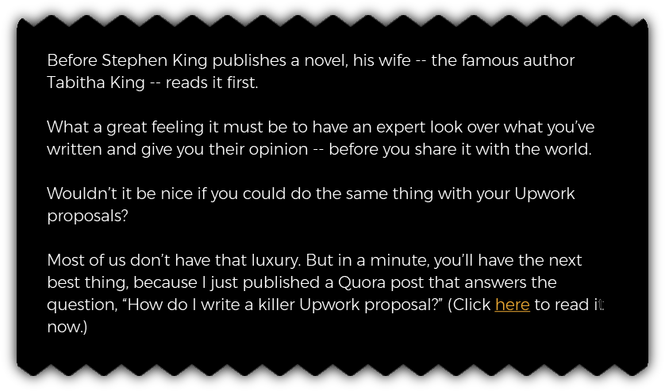 You can also spice things up a bit more, if you want to.
In the following example , I decided to use a story about the movie star Sylvester Stallone to reveal misconceptions about success. I could have just come right out and told the story, but I decided to tease people first by opening with a fun word association game:
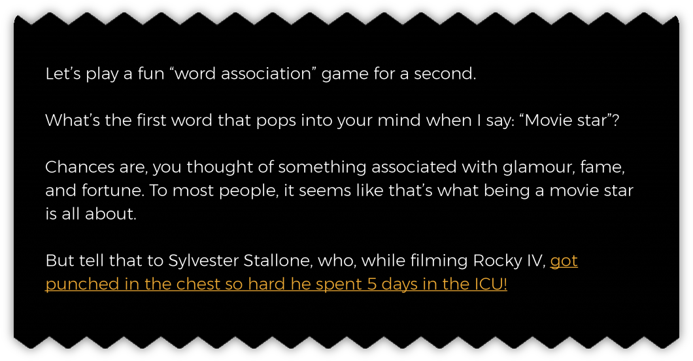
It’s OK to play around like this, as long as you make sure each line will invoke enough surprise and curiosity to draw the reader in. In this case, I knew people wouldn’t be able to resist the game, making this a powerful, curiosity driven opening.
You can even use stories to jazz up emails in "boring" industries. Here’s an example from an email that one FTW student wrote for her client, a B2B company:
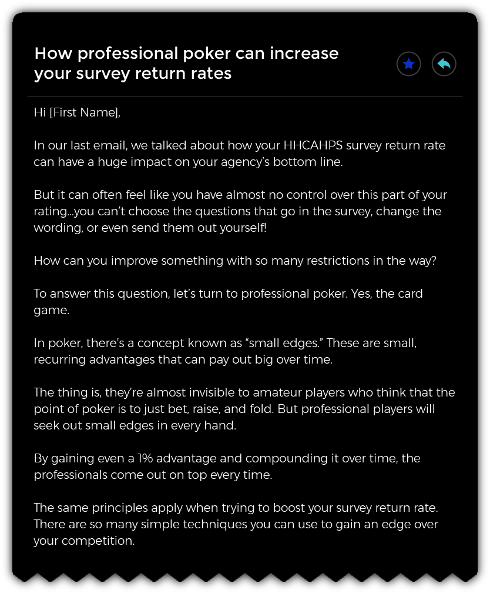
I love this! Here’s a freelancer writing about a dreary technical topic, so she infuses the copy with something weird and interesting to draw readers’ interest. Well done.
In case you’re wondering where she came up with the interesting tidbit about poker… She learned it from my Secrets Of A Six-Figure Upworker course! Remember, there are interesting nuggets EVERYWHERE -- it’s just a matter of making it a habit to notice them and write them down.
(Btw, it’s also worth noting that she knew absolutely nothing about "HHCAHPS surveys" before working with this client. Remember, great copywriters are detectives…they make it their business to learn about their clients industries.)
Once you’ve written your email copy, it’s time to pair it with an irresistible subject line.
Check out the video below to see my exact process for coming up with subjects that make readers want to open -- consistently and predictably.
Here’s a real example of how I used this exact process to come up with one of my best performing subject lines ever:
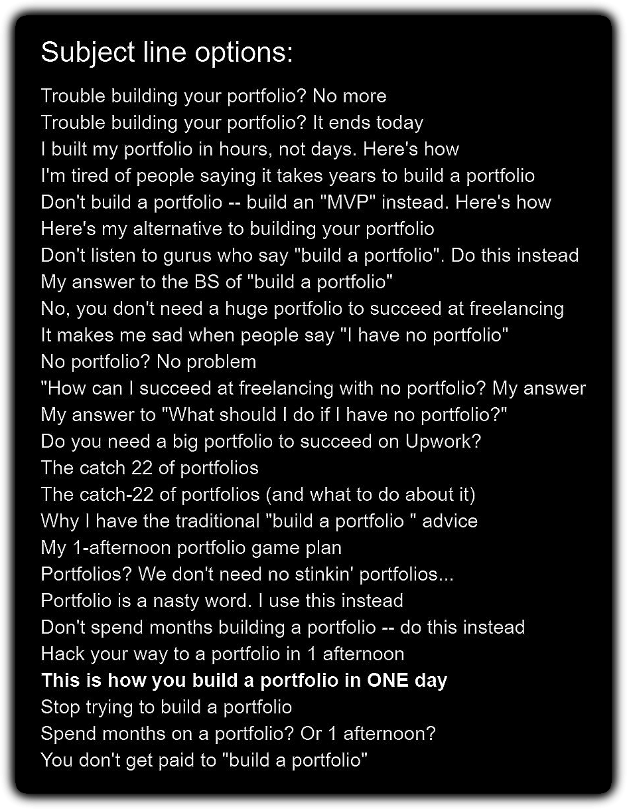
Notice how a few of them are terrible…most are OK…and a few are excellent. The idea is to end up with a few great choices clients will love.
One final note on subject lines: Make sure to keep them as short as possible, especially since most people are checking email on their phone. The last thing you want is to write a great subject line that gets cut off by a mobile screen.
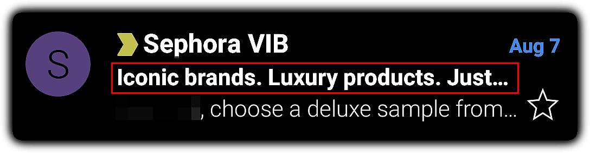
Feeling stuck on an email, or just unsure of what to write next?
Here are a few of my favorite "ingredients" you can use to get over the hump. Just go through this list, pick the one you think would fit best, and bam -- you’re back in business.
Create urgency. It’s never a bad idea to give readers extra motivation to act. Urgency, or any other type of scarcity are great ways to do that. Is a sale ending soon? Will prices be going up? Are there a limited number of products, free consults, or webinar seats? All of these are great examples of how to use strategic urgency to enhance your email copy.
You can also get creative! For example, I once paid $1,500 for one of James Altucher’s evergreen products after reading his email saying the "price would probably go up soon."
Write a bulleted list. You could write bullets about a lead magnet, a product or service, a list of features and benefits, a webinar, or anything else. I even use bullet points to "sell" readers on clicking through to a blog post or other article. One of my clients used to say that "great copywriters think in bullet points" -- a lesson that has stuck with me ever since.
Tell a success story. I always like to ask clients if they have any stories or case studies about people they’ve helped through their business. These can be great material for your email copy. You can tell the long version, the short version, or even include multiple stories in one email.
If the client doesn’t have any success stories to share, you can even tell someone else’s success story, as long as it’s relevant. You obviously don’t want to misrepresent it as one of your client’s success stories, but it’s OK to use other people’s stories to make a point as long as you’re clear that they’re not a customer of your client.
FAQ. A list of frequently asked questions and answers about a product or service is an excellent go-to piece of any autoresponder sequence. You can combine it with any of the other approaches in this course, or even just use it on its own.
The client may have a FAQ list already, so be sure to ask. If they don’t, be prepared to help them come up with one (remember to charge them for your time if you do this).
Testimonials. These are similar to success stories, but more succinct. Many clients will tend to have some testimonials on hand, even if they don’t have case studies, so these are a great backup. Adding one or more testimonials can also a great way to spice up any email.
Describe a product or service. As obvious as this sounds, I can’t tell you how often an email series fails to actually discuss the product or service being offered. Email readers aren’t mind readers, so if you’re writing copy for something that needs to be described, don’t forget to do it.
A helpful insight or story. Remember to keep a running list of these on your own as "writing prompts." You’ll find tons of them in your everyday life and reading list, once you start looking.
It can be something as simple as "Coffee used to be considered unhealthy, but now everyone says it’s healthy! It just goes to show you that conventional wisdom is often totally backwards..."
Or, "Did you see this article about the guy who brought $300,000 in PENNIES to the DMV? Some people will do anything to get a point across…"
A link to the product or service you’re offering. Most emails include one at the bottom, but there’s no rule that says you can’t have multiple. In fact, placing 2 or more links throughout your email copy can often improve the click through rate, so feel free to try it out.
Explain how something works. Unless something is blatantly obvious it’s hard to go wrong by including at least a brief explanation of it. This can be as straightforward as bulleting out a simple 3 step process (Step 1, Step 2, Step 3) to really spell it out for your readers -- while also making the copy feel more valuable.
Links to helpful articles. Linking out to content from high quality sources (especially big sites) is a great way to give extra value, improve your own credibility, and make your copy more powerful.
A useful fact, statistic or quote. Whatever you’re writing about, there’s a good chance you can find a useful stat, quote, or factoid to back it up. If you feel like your copy can use one, just Google it and see what comes up.
Credibility markers. If your client has a well known customer or partner company, pointing that out can be a great way to boost their credibility with readers. Or if they’ve ever been featured on a popular site or podcast, mentioning that (and maybe even linking to it) can achieve a similar effect.
Create a positive association. Talking about something that makes people feel good -- even if seems totally unrelated to your client -- can be a great way to create a positive association in readers’ minds.
For example, you might relay a story about Steve Jobs to make a point about business, mention a surprising fact about Disney World, or talk about a beautiful Caribbean Island.
Pose a socratic question. Asking a question can be a powerful tactic because it transforms the reader from passive consumer of your copy, to active participant. Even a question as simple as "Would it be worth 2 minutes to find out if you could save $2,000 or more?" immediately activates the reader’s imagination and makes them feel involved in the conversation.
Describe their problem in detail. Readers love it when you understand the exact problem they’re trying to solve. The better you can explain it, the more understood they feel, and the more likely they are to take the action you want them to take.
This works best when you use the same words they use to describe the problem, so be sure to ask the client for some good intel. I always like to ask clients, "How would the reader describe the problem to her husband?" If the client doesn’t know, that’s a good sign that you should be interviewing their readers or customers.
A "PS" section at the end of the email. You can fill it with any of the above ideas or something totally different -- your choice.
This simple but powerful 5-day sequence has lead to thousands of sales. As you’re reading through the emails, notice how I:
SUBJECT:
body:
Hi NAME,
Do you want to be able to charge higher rates on Upwork – and actually get them?
Maybe even break into the exclusive and mysterious realm of premium pricing? (Actually if you stick with me for a while, you’ll see it isn’t all that mysterious.)
I hope you said yes. Because, A) it shows me you’re sane, and B) this hack is designed to help you do that.
I’ll give you the skinny on how it works with a funny little story...in a minute.
First, here’s a quick preview of what you can expect from me in the coming days.
Over the course of the next week or so, I’m going to ship you my favorite hacks for making money on Upwork.
Some of these I figured out through trial and error, others came from flashes of insight, and some of it was just instinct.
Either way, the point is to help you accelerate your journey to earning the kind of money freelancers deserve for all the hard work we do.
I’ve chosen these 5 hacks carefully, because they’re simple, easy to implement, and can help you earn more money right away.
Could be that not all of them will apply to you -- that’s okay... Even successfully executing 1 or 2 of them can have a serious impact on your bottom line.
(Example: as you’ll see, one of these hacks earned me over $30k, and literally anyone can do it.)
For now, without further ado, let’s get right down to Hack #1.
I’m going to tell you about the hack itself, as well as the psychology behind it, so you can see how it really works.
Now, back to that funny story that explains it...
Just a smidge under 3 years ago, I was finishing up a project for one of my clients, when suddenly, my human nature kicked in.
(No, I don’t mean that I needed a bathroom break. Where is your mind at?)
What I mean is that I didn’t want to just earn a full time living on Upwork, I wanted to do better than that.
Clearly I needed to raise my rates in order to accomplish that. But by how much?
Well, I’d heard there were plenty of "off-line copywriters" who could charge way more than us "lowly online freelancers"...
So I did some research to see what these big dogs were hauling in.
Turns out many of them were charging $1,000 for a single page of web copy.
That’s when my pesky human nature perked up even louder than before.
I tried to bat it down with the "reality cry" of conventional Upwork wisdom...the first commandment of which is "Thou shalt not charge as much as offline freelancers!"
But no matter how hard I tried, I couldn’t get that ($1k) number out of my head.
What if I could actually pull it off?
If it worked, I could make significantly more money, without putting in so much as an ounce more effort. When I thought of it in those terms, that damn human nature of mine started firing on all cylinders.
Finally, I couldn’t resist the urge any longer.
What could I possibly lose by trying? (Little did I know the answer was actually "a lot," as you’ll see in a few segundos.)
So I decided to give it a shot.
I rolled up my sleeves, and carefully started writing proposals for 1 page of web copy, just like the big boys. My price tag? A cool $1k.
Waiting for the responses wasn’t easy. Like watching a pot of water try to boil. I wanted to jump out a window.
But just when I thought I was about to go barking mad...one by one, they started trickling in, like little rain droplets landing softly on a beautiful lily pad. (<---Can you believe a professional copywriter wrote this? If I can make money on Upwork, chances are you can too.)
And then, I really wanted to jump out the damn window............
The messages from the potential clients all read more or less the same:
"Nice samples, but your price is too high."
"Your work looks good, but too much moolah."
"I’d like to hire you, but why you charge so dang much??"
Ad. Freakin’. Nauseam.
Every time I saw one come in, I felt like that queen from Hamlet -- they were like "daggers that pierced mine eyes." (Yes I know it was "ears" in Hamlet, not eyes. But that wouldn’t even make a lick of sense here.)
My natural human drive to excel was quickly replaced with depression and a sinking feeling in the pit of my stomach.
Defeatist thoughts washed over me...
What made me think I could get away with charging so much? Maybe I should respond to some of these messages with a lower offer, if I want to work this week. Wait, no, they’ll sense desperation and grind me down to nothing!
Catch 22’s all over the place.
I even thought about throwing in the towel on Upwork altogether.
My experiment had crashed and burned, and it seemed like the prevailing wisdom about not being able to charge "real world" prices on Upwork was dead on after all.
Worse yet, everyone had known it. Except me. My greed had clouded my judgment and turned me into one arrogant SOB.
What was I thinking?
I was about to close my laptop and go for a walk to clear my head when another message popped up on the screen. There was this split second glimmer of hope inside me...but then I realized it was just more of the same...
"Impressive work, Danny. But your quote is too high. Sorry."
It was the straw that broke the camel’s back.
As if failing to increase my income wasn’t bad enough, I had actually lost money by putzing around asking for higher prices.
I felt like toppling my desk over.
But then, I couldn’t help but notice...
There was something strange about that last rejection message.
About all of them, actually.
Can you spot it? Look closely...
These rejections had been mixed in with compliments. Weird, no?
These people clearly admired my work enough to write me back and tell me.
I’d struck a chord with them.
And yet, not a one would even consider paying a somewhat premium price to work with me?
I started to wonder if maybe there was something else going on here. Something I was missing.
Only one way to find out...
I reached for my laptop and pounded out the following message back to that last client: "What makes you say my quote is too high?"
A few minutes later, he shoots back the following: "Actually, it’s because of your hourly rate. Your profile says you charge $75/hr, which means that at $1k, you’d basically be billing me for over 13 hours of work. Do you really think it’ll take you that long to write one page of copy??"
It took me a minute to wrap my brain around what was happening here.
Instead of looking at the total price I was quoting, this client -- and the others -- seemed to be "anchored" to the hourly rate they saw in my profile.
(By the way, "anchoring" is a real psychological effect. If you Google it you’ll see that this scenario is a very typical example of how it shapes our judgment.)
In other words, these clients didn’t view the $1k price tag as one-thousand dollars. They saw it as paying for 13+ hours of copywriting.
And that seemed like too long to take writing "just one page."
For a moment I considered removing my hourly rate from my profile entirely. If there was no hourly fee for clients to mentally anchor to, then it couldn’t work against me.
But then I thought about it some more, and started to wonder if I could actually make the anchoring effect work in my favor instead.
So I tried an experiment. I went to my profile, clicked the edit
button, and raised my hourly rate to...$125.00.
Then I took a deep breath, and applied to more 1-page copywriting jobs.
And guess what?
Within a few days, I’d won my first one, with zero price objections.
It wasn’t long before I’d won another, and another.
Not only that, but I was predictably able to raise all my flat fees across the board...for email copy, landing pages, video scripts, you name it.
Clients were now mentally anchored to the higher figure of $125.
And 8 hours seemed much more reasonable to them than 13.
And of course they liked my work, so they were okay with paying more than my competitors charged...as long as they could make the math "make sense" in their heads.
Notice that absolutely nothing about the project changed.
My quote, the amount of work involved, the competitors’ prices all stayed exactly the same from the first (disastrous) scenario to the second (winning) one.
The only thing that changed was the way the clients perceived my fee, based on how many hours they thought that fee represented.
So there are a couple of bottom lines with this hack.
The first is that you need to make sure that your "hourly rate" in your profile isn’t too small in relation to the size of the flat fees that you are quoting to clients.
Otherwise, they will get anchored to that number and they’ll feel like they aren’t getting a good deal.
The second is that if you want to charge more than other Upworkers, you can absolutely do that.
The conventional wisdom that says you can’t charge above average or premium prices on Upwork is totally wrong.
You just need to make sure to do it in the right way. And that is, if you’re going to charge higher flat fees than the pack, you need to go ahead and make sure that the hourly rate in your profile is higher too.
If you aren’t sure how high to make it, then just keep moving it up a bit at a time until you encounter some resistance. But in general you shouldn’t be too afraid of this -- as long as you’re charging based on the value you truly provide.
Is this ethical? Absolutely...
Flat fees and hourly rates have little to do with each other. When you’re quoting a flat fee, you can (and should) quote higher than you would if you were making a strict "hours for dollars" calculation.
So this is all 1000% kosher in every sense of the word.
Btw, this doesn’t only work for flat fee projects. It also works when you bid on hourly projects as well.
If you bid $50/hr on a job when your profile says your hourly rate is $30, then it’s not going to appear as "sensible" to the client as it would if your profile said your hourly rate was $50.
There are many ways you can use this deeply psychological hack on Upwork. Can you think of any others?
Hit ‘reply’ and give me your best guess. (Don’t worry about being wrong, I don’t judge.)
Can’t think of a guess? No worries. Just reply and say hi and introduce yourself. I personally read every email.
Cheers,
Danny "Anchor Man" Margulies
PS: In the next email, you’ll find out the hack I used to earn an extra $30k over a 2-year period. This literally took me 3 minutes.
Stay tuned.
Here is an actual email series that one FTW student used to 5X conversions for her client.
Notice how she takes a "boring," technical industry that she initially knew nothing about, and managed to quickly get up to speed by wearing her Detective Hat. Then, she created this short but effective email series using strategies and tactics from Module 2.
Subject Line Options:
Struggling to get your HHCAHPS surveys back on time?
How HHCAHPS surveys affect your 5-star rating (and your bottom line)
Email Body:
Hi NAME,
It’s hard to know where to start with all the different quality measures you now have to keep track of for Value Based Purchasing.
And every year, all of these tiny little metrics will be added up to give you a quality score. Based on the score, your "quality-adjusted" payment rate can really help or hurt your bottom line.
But you already provide your patients with the best quality of care -- so you’re good right?
There’s one thing that trips up even the best home health agencies though.
The HHCAHPS surveys.
Did you know that you need at least 40 completed surveys to even receive a rating? One less, and your results aren’t considered statistically significant.
But that’s simple enough right? Just get 40 surveys and you’re good to go.
Here’s the issue: How do you get your patients to return the darn thing?
You might provide your patients with the best quality of treatment possible, but still end up losing out to the organizations that have implemented strategies for getting their surveys back.
If you’re struggling to get your HHCAHPS surveys back, you’re not alone.
That’s why I asked [PRESENTER NAME], the senior clinical consultant at [COMPANY NAME], to lead our next webinar as part of our Outcome Improvements series. It’s literally called "How do I get them to send back those surveys?"
We’ve dedicated a full hour to sharing actionable steps that you can use to make sure your patients return those HHCAHPS surveys.
Here are just a few of the things we plan to cover:
Join [PRESENTER NAME] as she discusses all this and more:
How do I get them to send back those surveys?
Wednesday, June 15th
1PM – 2PM EDT
[Sign me up!]
Just one hour could be the difference between a reward or penalty payment rate! Don’t be one of the home health agencies that fall behind because of something so simple.
Sign up now and we’ll see you on the 15th!
[NAME]
[COMPANY NAME]
Subject Line:
How professional poker can increase your survey return rates
Email Body:
Hi NAME,
In our last email, we talked about how your HHCAHPS survey return rate can have a huge impact on your agency’s bottom line.
But it can often feel like you have almost no control over this part of your rating…you can’t choose the questions that go in the survey, change the wording, or even send them out yourself!
How can you improve something with so many restrictions in the way?
To answer this question, let’s turn to professional poker. Yes, the card game.
In poker, there’s a concept known as "small edges." These are small, recurring advantages that can pay out big over time.
The thing is, they’re almost invisible to amateur players who think that the point of poker is to just bet, raise, and fold. But professional players will seek out small edges in every hand.
By gaining even a 1% advantage and compounding it over time, the professionals come out on top every time.
The same principles apply when trying to boost your survey return rate. There are so many simple techniques you can use to gain an edge over your competition.
For example, did you know that you can customize surveys with your own branding?
It’s such a simple thing to add, but many agencies completely overlook it. All you need to do is contact your survey administration vendor and ask to have you logo added to both the cover letter and the survey.
This one quick change makes it easier to patients to identify the source of the letter or email – making it much less likely that they’ll throw it in the trash with all their credit card offers and campaign flyers.
In our next webinar, we’ll cover many more of these "small edges" and give you an actionable plan for increasing your survey return rates.
How do I get them to send back those surveys?
Wednesday, June 15th
1PM – 2PM EDT
[Save my seat!]
Get ready for a value packed, no nonsense session that’ll give you a leg up over your competition, boost your survey return rates – and ultimately, add to your bottom line.
[NAME]
[COMPANY NAME]
P.S. Don’t worry if you can’t make it. We’ll send all registrants a recording of the webinar afterwards. Sign up today!
Subject Line:
Final reminder: HHCAHPS surveys webinar today!
Email Body:
Hi NAME,
In our previous emails, we talked about the huge impact your HHCAHPS survey return rates can have your CMS rating -- and eventually the amount of dough you bring in.
We also shared a quick tip for increasing your return rates: customize your cover letter and surveys.
Today, we wanted to send out a quick reminder: Our "How do I get them to send back those surveys?" webinar starts in just 2 hours!
If you join in, you’ll learn about:
...and plenty more techniques to improve your HHCAHPS program!
How do I get them to send back those surveys?
Wednesday, June 15th
1PM – 2PM EDT
[Sign me up!]
Note: This is the last reminder we’ll send out before the webinar.
If you’re serious about improving your survey return rates, scoring a 5 star rating, and getting rewarded for the excellent care you provide, we’re sure we’ll see you there!
[NAME]
[COMPANY NAME]